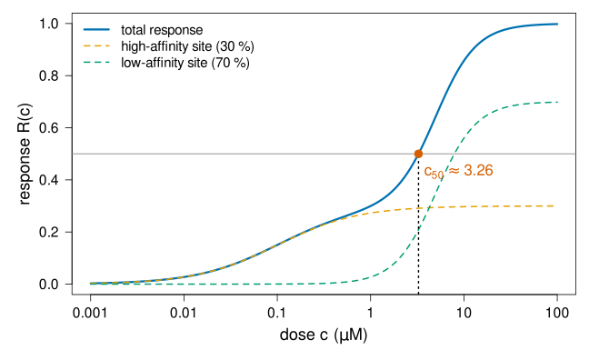
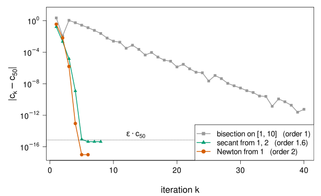
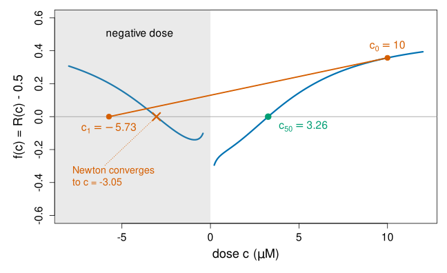
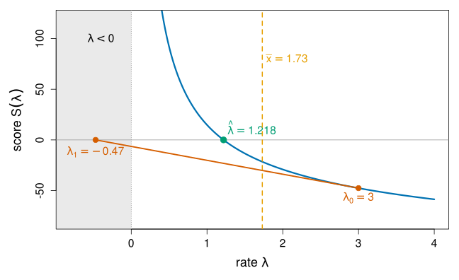
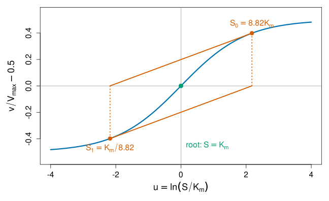

Bisection is safe but slow: one binary digit per step. This lecture is about the fast methods, and about how they fail.
Newton’s method replaces f by its tangent line and solves that instead. Near a root the number of correct digits doubles every step (quadratic convergence).
The secant method uses a line through the last two points instead of the tangent, so it needs no derivative. Order about 1.6.
Both can fail: a flat derivative throws the iterate far away, a bad start runs off to a meaningless root, some starts cycle forever.
Production root finders (Brent’s method: R’s uniroot, Python’s scipy.optimize.brentq) keep a bracket for safety and take fast steps when they can.
Biology: the dose giving 50 % response of a two-site dose–response curve, and a maximum-likelihood estimate as the root of the score function.
Bisection keeps an interval [a, b] with f(a)\,f(b) < 0 and halves it. It always converges, but only linearly: the error halves each step, about 0.3 decimal digits per step, ~50 steps for full precision.
Fixed-point iterationx_{k+1} = g(x_k) converges near x^* if |g'(x^*)| < 1, and the error shrinks by about |g'(x^*)| per step.
Stopping: stop when the step (or bracket) is below a relative tolerance, and always cap the number of steps.
Question for today: can we use more information about f (its slope) to go faster?
A biology problem: EC50 of a two-site drug

A drug binds two receptor subtypes: a high-affinity site (K_1 = 0.1\,\muM, 30 % of the response) and a low-affinity site (K_2 = 5\,\muM, Hill coefficient 2, 70 %):
For one Hill curve, c_{50} = K, by algebra. For the sum of two, there is no formula: we must solve f(c) = R(c) - 0.5 = 0 numerically.
The function and its derivative in R
R <-function(c) 0.3* c / (0.1+ c) +0.7* c^2/ (25+ c^2)f <-function(c) R(c) -0.5# root = c50df <-function(c) 0.03/ (0.1+ c)^2+35* c / (25+ c^2)^2f(c(1, 3, 10))# [1] -0.2003497 -0.0243833 0.3570297
f(3) < 0 < f(10): the root lies between 3 and 10. Bisection would work.
df is f'(c), by hand: quotient rule on each term, \frac{d}{dc}\frac{c}{0.1 + c} = \frac{0.1}{(0.1 + c)^2} and \frac{d}{dc}\frac{c^2}{25 + c^2} = \frac{50c}{(25 + c^2)^2}.
Check the derivative before trusting it (exercise C1): compare with \bigl(f(c + h) - f(c)\bigr)/h.
Newton’s idea: follow the tangent
Near x_k, Taylor says f(x) \approx f(x_k) + f'(x_k)\,(x - x_k): a straight line. Set the line to zero and solve for x:
The fraction is 1/\text{slope} of the chord, an estimate of 1/f'(x_k).
One new function evaluation per step (f(x_k); f(x_{k-1}) is reused). Newton needs two (f and f').
Needs two starting values. Unlike bisection, they need not bracket the root.
Secant in R
secant <-function(f, x0, x1, tol =1e-12, maxit =50) { f0 <-f(x0); f1 <-f(x1)for (k in1:maxit) { step <- f1 * (x1 - x0) / (f1 - f0) x0 <- x1; f0 <- f1 # shift the pair x1 <- x1 - step; f1 <-f(x1)if (abs(step) <= tol *abs(x1)) return(list(root = x1, iter = k)) }warning("no convergence after ", maxit, " steps")list(root = x1, iter = maxit)}secant(f, 1, 2)$iter; secant(S, 1, 2)$iter # c50: 6 steps; lambda-hat: 8 steps
Same structure as newton; only df is gone.
Danger: if f_1 = f_0 the step is 0/0 or \pm\infty. Production code tests for it.
Digits per step: bisection, secant, Newton

Correct digits of c_{50} after step k:
k
bisect
secant
Newton
1
0.2
1.3
1.0
2
2.5
3.2
2.7
3
0.5
5.3
6.3
4
0.8
9.4
13.6
5
1.1
15.6
all
Orderp: e_{k+1} \approx C e_k^p. Bisection p = 1, secant p = 1.618 (the golden ratio), Newton p = 2.
Per function evaluation, secant (1.62) beats Newton (\sqrt2 = 1.41): two secant steps cost as much as one Newton step.
Try it: step through Newton, secant and bisection
Failure 1: a flat tangent throws you far away

r <-newton(f, df, x0 =10)$rootr# [1] -3.04997f(r)# [1] 0 # a root!
At c_0 = 10 the curve is nearly flat (f' = 0.023), so f/f' is a huge step, to c_1 = -5.73.
Newton then converges, quickly and quietly, to an exact root at a negative dose. No warning.
Check: is the root in the meaningful range? Plot f. Start inside a bracket.
Failure 2: a bad start for the MLE

l <-3# startfor (k in1:6) { l <- l -S(l) /dS(l)cat(signif(l, 4), "")}# -0.4704 -1.066 -2.587# -6.032 -12.33 -24.67
The score is convex and flattens for large \lambda; from \lambda_0 = 3 the tangent crosses zero at \lambda_1 = -0.47. From there Newton runs off to -\infty.
Starts up to about 2.7 converge; from 2.8 on they do not. The start must be close enough.
Check:\lambda > 0 at every step; the log-likelihood should increase at every step.
Failure 3: cycling forever

Michaelis–Menten, in log substrate u = \ln(S/K_m): solve v/V_{\max} = 0.5 (root S = K_m). Newton’s step is u_{k+1} = u_k - \sinh u_k.
u <-2.1773189849653# S0 = 8.82 Kmfor (k in1:6) { u <- u -sinh(u); cat(signif(u, 4), "")}# -2.177 2.177 -2.177 2.177 -2.177 2.177
Start at 8.82\,K_m: the tangents bounce between 8.82\,K_m and K_m/8.82forever. Start at 10\,K_m: u grows, Inf, then NaN. Start at 5\,K_m: converges.
Check: cap the number of steps (maxit) and look at the last few iterates.
Failures and checks at a glance
What goes wrong
Symptom
Check / fix
Start far from root, f' small
huge first step
plot f; start inside a bracket
Converges to the wrong root
root outside the meaningful range
check sign and range of the answer
Divergence
iterates grow, Inf, NaN
is.finite() on each iterate; maxit
Cycling
iterates repeat
maxit plus warning; print the last iterates
Wrong derivative
slow (linear) or no convergence
compare df with a finite difference
f'(x^*) = 0 (double root)
linear convergence, few digits
look at the digits-per-step
Secant: f(x_k) = f(x_{k-1})
division by 0
test before dividing
The cure for most of them: never leave a bracket.
Safeguarding: Brent’s method
Keep a bracket [a, b] with a sign change, and try a fast step:
Propose a fast step: secant, or inverse quadratic interpolation (a parabola x(f) through the last three points, evaluated at f = 0).
If the proposal falls outside the bracket, or the bracket has not shrunk enough lately, take a bisection step instead.
Evaluate f at the new point and keep the half that still has the sign change.
Guaranteed to converge, like bisection: never worse than about bisection’s pace.
Superlinear (order up to ~1.8) once close, like secant. No derivative needed.
This is R’s uniroot and Python’s scipy.optimize.brentq.
uniroot in practice
r <-uniroot(f, interval =c(0.01, 100))c(root = r$root, iter = r$iter, estim.prec = r$estim.prec)# root iter estim.prec# 3.261305e+00 9.000000e+00 6.103516e-05r$root - c50# [1] -1.360226e-07 # only ~7 digits!r <-uniroot(f, interval =c(0.01, 100), tol =1e-12)r$root - c50; r$iter# [1] 4.440892e-16# [1] 10uniroot(f, c(5, 100)) # Error: f() values at end points not of opposite sign
The default tol is \varepsilon^{1/4} \approx 1.2\times10^{-4}, an absolute tolerance: set tol yourself.
It needs a sign change; extendInt = "yes" widens a bad interval for you.
A wide bracket of plausible rates is easy to give: S > 0 for small \lambda, S < 0 for large \lambda.
No start value to choose, no derivative, no run-off to negative rates.
When you need the derivative anyway (standard error), polish with one or two Newton steps from the bracketed answer.
Rule of thumb: bracket first (uniroot, brentq), use hand-written Newton when you need speed in a loop over thousands of genes, and then with a good start and checks.
Checklist: before you trust a root
Plot f over the plausible range. How many roots? Where?
Bracket the root if you can, and use a bracketing method (uniroot, brentq).
Set the tolerance yourself; know whether it is absolute or relative.
Check the answer:|f(x)| small, x in the meaningful range (positive dose, positive rate).
Hand-written Newton: check df against a finite difference; cap the iterations; warn on failure.
Look at the convergence: digits should double (Newton) or grow by ~1.6× (secant). If they grow by a fixed amount per step, something is wrong (derivative, double root).
Summary
Newton: x_{k+1} = x_k - f(x_k)/f'(x_k), from the tangent line (first-order Taylor). Near a simple root, quadratic: e_{k+1} \approx \frac{f''}{2f'}\,e_k^2, digits double each step.
Secant: the tangent replaced by the chord through the last two points. No derivative, one evaluation per step, order 1.618.
Both converge only from close enough. Failures: a flat derivative sends the iterate far away (negative dose), a bad start diverges (negative rate), some starts cycle. Detect with range checks, is.finite(), maxit, and a plot of f.
Brent’s method (uniroot, brentq) keeps a sign-change bracket and uses fast steps inside it: guaranteed and fast. Set tol yourself.
Biology: an EC50 of a two-site curve and a maximum-likelihood rate are both roots with no closed form; the observed information -S'(\hat\lambda) from Newton gives the standard error.